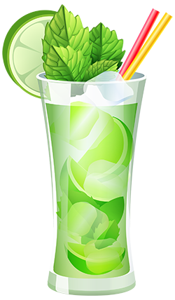

Virgin Mojito

Ingredience
- třtinový cukr
- máta
- limetka nebo limetkový sirup (3cl)
- voda (perlivá)
- led (kostky nebo drcený)
postup
Do sklenice (Collins nebo Highball Glass) dáme mátu, cukr a část limetky. Suroviny lehce rozmačkáme tloučkem (limeta pustí šťávu), poté zalijeme trochou vody a přidáme led, zbytek nakrájené limetky a lístky máty. Dolijeme vodou a můžeme podávat.